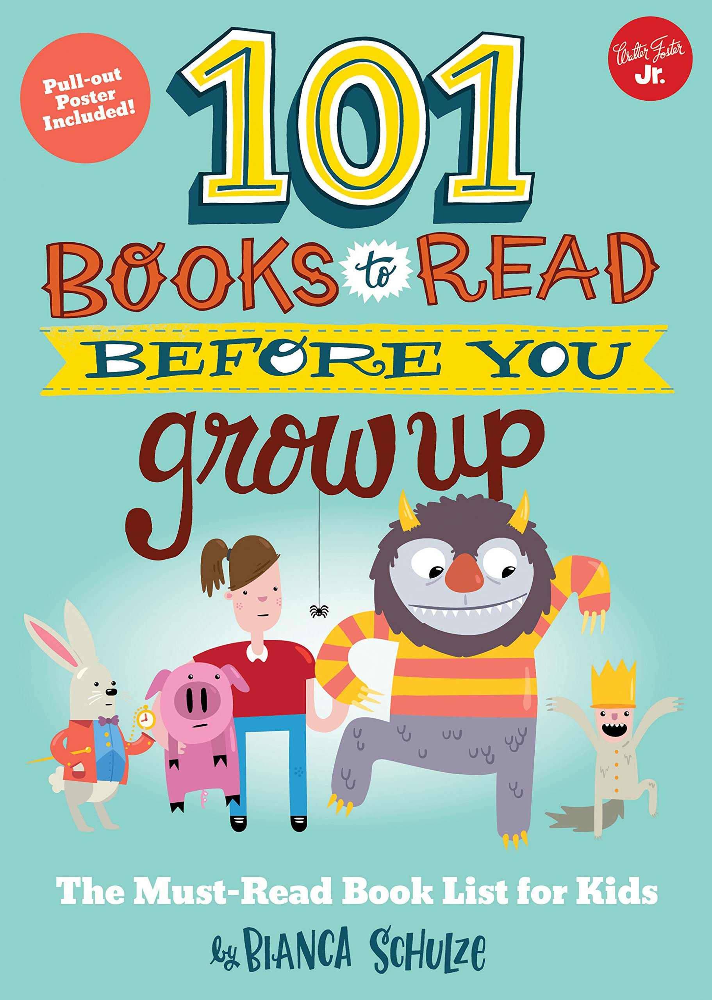
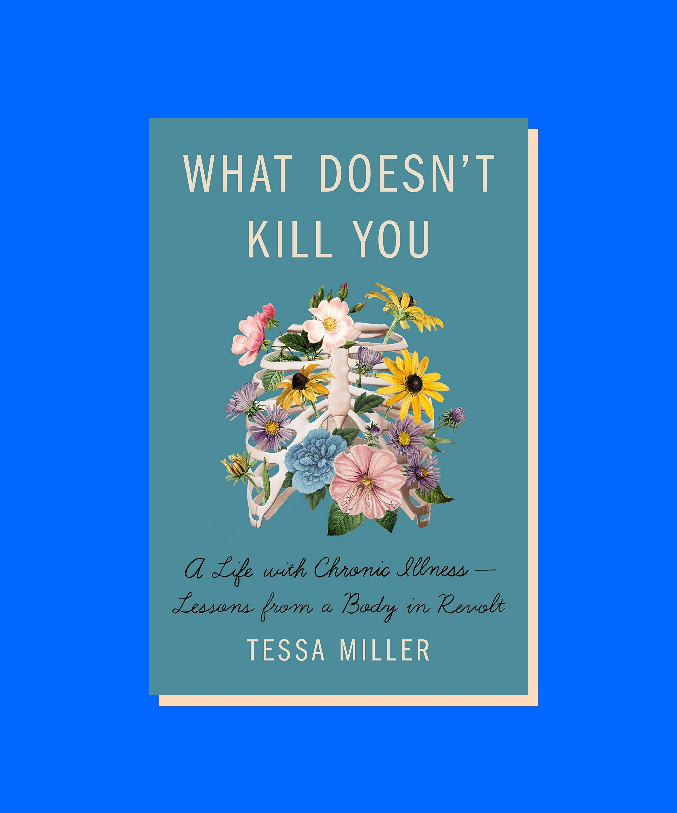
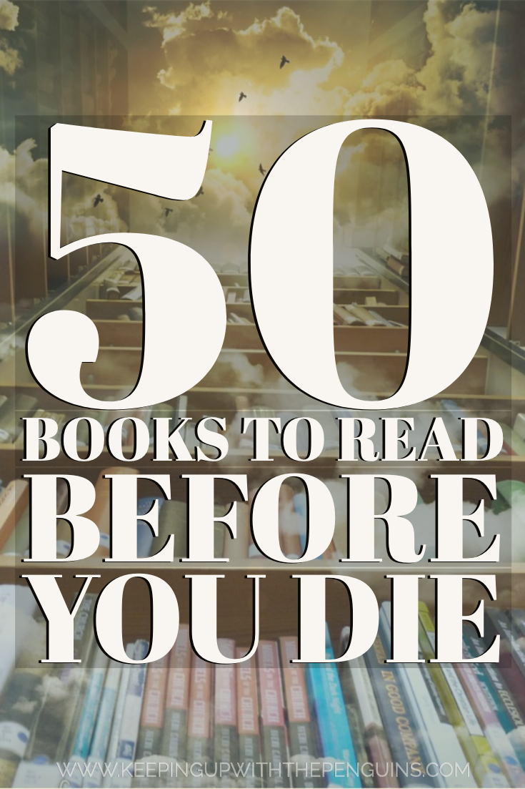
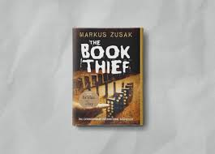

|  |
About AuthorBianca Schulze is the author of Don't Wake the Dragon and Who Loves the Dragon?, as well as the founder and editor of The Children's Books Review - a resource devoted to children's literature and literacy. Bianca is also the bestselling author of 101 Books to Read Before You Grow Up. She is a reader, reviewer, mother, and children's book lover. Born and raised in Sydney, Australia, Bianca now lives with her husband and three children near Boulder, Colorado. |
|  |
AboutBianca Schulze is the author of Don't Wake the Dragon and Who Loves the Dragon?, as well as the founder and editor of The Children's Books Review - a resource devoted to children's literature and literacy. Bianca is also the bestselling author of 101 Books to Read Before You Grow Up. She is a reader, reviewer, mother, and children's book lover. Born and raised in Sydney, Australia, Bianca now lives with her husband and three children near Boulder, Colorado. |
|  |
AboutIts a new year, and that means its reading resolution time.It’s a new year, |

|
AboutYoung writer Sal Paradise has his life shaken by the arrival of free-spirited Dean Moriarty and his girl, Marylou. As they travel across the country, they encounter a mix of people who each impact their journey indelibly. |
|  |
Aboutthe story follows Liesel Meminger, a young girl living with foster parents, Hans and Rosa Hubermann, in Nazi Germany during World War II. While adapting to her new home, she is exposed to the horrors of the war and politics. |